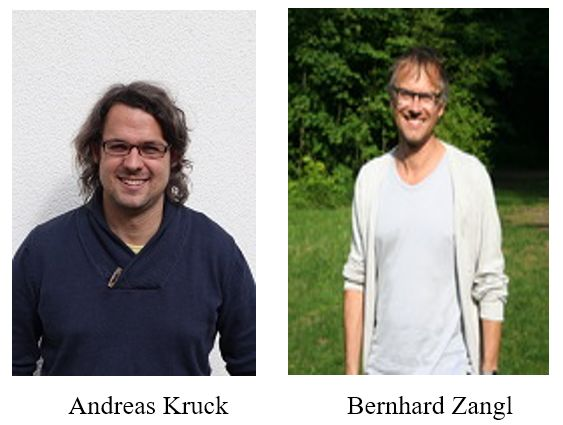

收录于合集 #理论研究 96个
作品简介
【作者】
Andreas Kruck是德国慕尼黑大学国际关系和全球治理讲师。研究兴趣为国际安全、国际金融、国际机制、全球治理和公共政策等领域。
Bernhard Zangl是德国慕尼黑大学全球治理与公共政策教授。研究兴趣为全球治理和国际机制等领域。
【编译】 吴皓玥（国政学人编译员，北京语言大学）
【校对】 赵雷
【审核】 陈勇
【排版】 贺奕
【来源】 Kruck.A., & Zangl.B. (2019). Trading privileges for support: the strategic co-optation of emerging powers into international institutions. International Theory, 11 (3), 318–343.
期刊介绍
International Theory（《国际理论》）是一本经同行评审的期刊，致力于促进有关世界政治的实证、法律和规范方面的理论学术研究。2018年该期刊影响力因子为1.263，在“国际关系”类别的91种期刊中排名第51。
以特权换取支持： 新兴大国进入国际机制的战略吸纳
Trading privileges for support: the strategic co-optation of emerging powers into international institutions

内容提要
随着新兴大国崛起、守成大国衰落，国际机制面临着适应新的权力现实的压力。文章要解决的问题是，国际机制（International Institutions）何时以及如何适应潜在的全球权力变迁？作者借鉴了国内和国际、专制与民主、过去与现在等其它领域对战略吸纳的独立描述，提出了一种战略吸纳（Strategic Co- optation）的制度主义理论，详细阐述了战略吸纳的概念、条件和结果，旨在说明这一理论在国际机制适应全球权力变迁方面的经验相关性。首先，作者将吸纳概念化为一种相互适应或合作的具体形式，在这种形式中，守成大国用在机制中的特权换取新兴大国对机制的支持。接着，作者将全球权力变迁时新老大国可能就此类交易达成一致的条件理论化。然后，作者讨论了可以使吸纳稳定的内生动力，并指出这一内生动力也会使吸纳不稳定。在结论中，作者总结并提出，这一理论还可以超越制度适应全球权力变迁这一范围条件，提高我们对战略吸纳本身的理解。
文章导读
一、争论中的全球权力变迁理论
作者指出，早期的权力转移理论（Power Transition Theories, PTTs）讨论的是：在崛起的挑战国取代衰落的霸权国这样的权力转移中，国际机制和平地适应权力转移是否可能。而近期的权力变迁理论（Power Shift Theories, PSTs）则有以下变化。第一，权力变迁理论不再关注全面的权力转移，转而研究国际机制对全球权力变迁的适应。权力变迁指的是新兴大国超越一些守成大国，但与全面的权力转移相比，新兴大国尚无法挑战现有霸主。第二，权力变迁理论不再关注整个权力结构的变迁，也就是不再把全球秩序作为一个整体来分析，而是研究特定机制如何适应特定问题领域的全球权力变迁。第三，权力变迁理论还挑战了权力转移理论的悲观假设，即调整机制的可能性很小，重大战争是不可避免的。
在权力变迁理论内部也存在着争论。借鉴现实主义国际关系理论的权力变迁理论认为，守成大国可能会顺应新兴大国调整机制的要求，以体现新兴大国提高的权力地位。这种妥协主义的理论（Accommodationist Approach）强调，权力变迁将加剧守成大国与新兴大国之间的利益冲突，从而带来战争风险。然而，正是这种风险能够激励守成大国通过顺应新兴大国调整机制的要求，主动管理新兴大国的崛起。毕竟，这些机制调整可能会防止在未来进行根本性的机制改革。
相比之下，借鉴自由主义传统的权力变迁理论认为，新兴大国将寻求融入当前秩序及其机制。这种融入主义的理论（Integrationist Approach）假定，目前的全球秩序比以前的秩序更易加入、更难推翻。原因在于当前的秩序允许新兴大国崛起，另外，通过之前融入秩序及其机制，新兴大国已经历了一个社会化进程，已将机制最基本的原则内在化，能够相当和谐地进一步融入。
妥协主义和融入主义的理论都确定了对全球权力分配变化进行机制调整的重要模式。然而，这两者分别聚焦于冲突的调解以及和谐的融合，忽视了第三种机制适应的模式，即“战略吸纳”。在某种程度上，“战略吸纳”是“妥协（accommodation）”和“融入（integration）”的结合。然而，“战略吸纳”在许多重要方面不同于另外两者。“妥协”意味着守成大国单方面适应新兴大国对机制调整的要求；另一方面，“融入”意味着新兴大国单方面适应现有机制。相比之下，“战略吸纳”是相互适应的一种具体形式。它意味着守成大国通过授予新兴大国在机制中的特权（妥协模式），换取新兴大国对机制的支持（融入模式）。例如，在2008年全球金融危机之后，中国提供了至关重要的金融支持以遏制危机，从而稳定国际货币基金组织，并以此换取增加在国际货币基金组织中的投票权。
二、战略吸纳的概念
吸纳是一个具体的机制调整过程，在此过程中，现有的权力持有者与其他权力中心为了稳定机制，越来越多地分享权力的行使或分担权力的责任、抑或二者兼有。
作者关注战略吸纳，并将其概念化为吸纳者和被吸纳者的战略选择的结果。无论在何种特定情境下，吸纳者和被吸纳者之间基本的吸纳交易始终相同，即以在机制中的特权换取对机制的支持，以稳定机制秩序。
战略吸纳是一种非常特殊的合作，不仅因为吸纳者和被吸纳者相互交换在机制中的特权和对机制的支持，还因为它是不平等的行为体之间纵向合作的一种形式，而非平等行为体的横向合作，其中吸纳者比被吸纳者拥有更多权威。吸纳完成后，尽管被吸纳者得到了一些特权，并因此得到了更多的权威，但它未得到与吸纳者同等的特权和权威，仍从属于原先就主导秩序及其机制的吸纳者。
在吸纳中给予的特权和提供的支持可能会有很大差别：第一，无论是正式的还是非正式的，被吸纳者获得的在机制中的特权可以是程序性（procedural）的，也可以是实质性（substantive）的。第二，无论是观念的还是物质的，被吸纳者为稳定现有秩序所提供的支持可以是特定（specific）的，也可以是分散（diffuse）的。吸纳特定的支持是指被吸纳者部分地完成特定任务；吸纳分散的支持意味着被吸纳者应总体上忠于现有秩序及其机制。
三、战略吸纳的条件
尽管吸纳是调整国际机制以适应全球权力变迁的重要手段，但新兴大国和守成大国并不总是能够在这方面达成一致。那么，吸纳的条件是什么？最基本的假设是，只有当吸纳者与被吸纳者的收益都大于成本时，吸纳才有可能。但是，什么因素影响双方对成本收益的评估呢？
1. 作为必要条件的根本挑战
对现有秩序及其机制的根本性挑战是战略吸纳的必要条件。尽管不同的吸纳关注不同的挑战，但是作者强调了这些挑战的两个关键区别。第一个区别是对权威（authority）的挑战还是对治理（governance）的挑战；第二个区别是内部的（internal）挑战还是外部的（external）挑战，即是来自被吸纳方的挑战还是来自第三方的挑战。
由此，可以推论出四种类型的挑战，这四种挑战都有其独特的原因来解释为什么吸纳的收益可能超过其成本。
驯服反对者（Taming Opposition）：面对来自内部对其权威的挑战，吸纳者可能会利用吸纳来驯服反对者。非正式地承认印度为核大国，从而使印度加入核不扩散机制（或NPT机制）就是一个例子。印度等国对NPT机制的合法性提出了质疑，因为该机制严格地强制执行了无核国家不寻求核武器的承诺，同时在很大程度上忽视了拥有核武器的国家不断违反其削减核武器库的承诺这一事实。因此，NPT机制在20世纪90年代末和21世纪初经历了一场严重的权威危机。通过2008年核供应国集团（NSG）的豁免，美国和其他核武器国家非正式地承认印度为核大国，试图驯服印度并遏制NPT机制的权威危机。
雇佣搅局者（Employing Spoilers）：面对来自内部对其治理的挑战，吸纳者可能会雇佣破坏它们治理努力的行为体为被吸纳者。中国加入巴塞尔银行监管委员会（BCBS）就是一个例子。在上世纪90年代和本世纪前十年，中国银行业成长迅速。与此同时，中国不是BCBS的成员，这削弱了BCBS颁布有效的全球银行监管标准的能力。作为非成员国，中国对BCBS标准的执行缓慢而零碎。2009年，美国和欧盟向中国（以及其他新兴大国）提供BCBS成员资格，解决了这一来自内部对其治理的挑战。其结果是，中国出台了甚至比最近提出的《巴塞尔协议III》(Basel III)要求的标准还要严格的监管规定，并提前实施了这一规定。
委托伙伴（Committing Partners）：面对来自外部对其权威的挑战，吸纳者可能会参与吸纳，以委托合作伙伴帮助它们稳定秩序。中国加入世贸组织核心谈判小组就是一个例子。2001年中国成为世贸组织成员后不久，美国和其他守成大国将中国纳入世贸组织核心谈判小组，即所谓的四方集团。它们这么做是希望中国能帮助遏制印度和巴西对其权威的挑战。
获得能力（Enlisting Competence）：面对来自外部对其治理的挑战，吸纳者也可能会为了获得能力参与吸纳。2008年全球金融危机后，中国进入IMF的吸纳就是一个例子。守成大国，尤其是美国，在国际货币基金组织的加权投票制度下给予中国更多的投票权。它们这样做是为了说服中国加强其金融支持，以稳定处于压力之下的全球金融体系。同样，守成大国在2007/08年将G20从一个财长论坛提升为一个政府首脑论坛，也是为了利用新兴经济体的金融能力来遏制全球金融危机。
2. 被吸纳者可用性作为可能的驱动因素
除了对秩序或其机制的根本挑战以外，吸纳还需要有能力和意愿为秩序稳定提供所需支持的被吸纳者。对于吸纳者和被吸纳者而言，吸纳的成本与收益取决于潜在的被吸纳者在多大程度上与体系相关，以及它们在多大程度上与现有秩序及其机制的社会目的一致。因此，作者认为，被吸纳者的可用性（availability）是战略吸纳的最重要的可能性驱动因素，这种可用性用来表示被吸纳者和现有秩序的社会目标体系相关并保持一致。
首先，体系相关（Systemically Relevance）意味着该行为体不仅强大，而且有足够的能力（物质上或观念上的）独自破坏秩序，因此对于稳定秩序至关重要。也就是说，体系相关的行为体可以运用它们的能力来挑战秩序，或者帮助克服对秩序的挑战。因此，吸纳者有动机通过吸纳来培养这些行为体为维持秩序做贡献的兴趣。体系相关的行为体的可用性，也将激励这些可能被吸纳的行为体接受被吸纳。作为体系相关的行为体，它们有更大的动机为稳定秩序做贡献。由于它们的支持是至关重要的，因此依靠其它行为体的贡献是不可能的。由于它们的支持对秩序的稳定产生了影响，它们提供支持以换取在机制中的特权的动机就会增强。
但是，如果这些行为体不同意该秩序及其机制的社会目的（Social Purpose）和基本原则，也不太可能导致吸纳。因此，如果只有修正主义或革命主义的行为体，吸纳是不可能的。如果有改良主义的行为体，吸纳的可能性则更大一些。对于吸纳者来说，由于可以相信被吸纳者不会利用其机制上的特权来修正秩序的基本原则，更不用说秩序的社会目的，因此吸纳变得更加容易。此外，吸纳者需要提供影响更小的特权，以获得被吸纳者的支持。同样地，与秩序的原则与目的一致的被吸纳者更容易接受被吸纳——作为在机制中的特权的回报，被吸纳者“只不过”必须为它们大体同意的秩序或机制提供支持。因此，当存在与该秩序的社会目的及其基本原则相一致的被吸纳者时，吸纳协议的范围要大得多。
总而言之，要想实现吸纳，新兴大国不仅需要变得越来越强大，还应该跨越体系相关性的界限，与现有秩序的社会目的保持一致。新兴大国应该是关键的改革者，而不是次要的修正主义者。
3. 第三方阻力作为可能的驱动因素
吸纳的可能性往往也取决于第三方对吸纳的接受或抵制。
第三方产生的阻力越大，吸纳者与被吸纳者进行吸纳的成本就越高。在极端情况下，克服第三方阻力的成本可能会完全阻止吸纳。作者认为，吸纳各方克服第三方阻力的能力主要取决于两个机制条件。首先，这取决于相关机制内部的第三方否决权。第三方的否决权越强（弱），克服其阻力的成本就越高（低），这反过来又使合作的可能性更小（大）。第二，这取决于吸纳各方在相关机制之外的吸纳选择。这些选择范围越广（窄），克服第三方阻力的成本就越低（高），而第三方阻力反过来又会增加（减少）合作的可能性。综上所述，这些制度条件不仅决定了克服第三方阻力的成本，因而决定了吸纳的可能性；而且也塑造了吸纳各方克服第三方阻力的策略。
突破（breaking）：如果在机制设置中，第三方拥有强大的否决权，吸纳各方在相关机制之外几乎没有吸纳的机会，则吸纳的可能性很小。吸纳各方唯一的选择就是突破顽固的第三方的阻力。然而，突破阻力通常代价高昂。
转移（shifting）：如果在机制设置中，第三方拥有强大的否决权，但吸纳各方享有广泛的外部选择，吸纳在某种程度上的可能性更大。吸纳各方可能会转移到另一个机制，从而规避第三方的阻力。虽然转移成本高昂，但通常比打破第三方阻力的成本要低。
否决（overruling）：如果在机制设置中，第三方没有否决权以阻止吸纳双方，吸纳是有可能的。这甚至适用于吸纳各方在相关机制之外的吸纳选择很少的情况。在机制内部，如果吸纳各方获得建设性多数，第三方就可以被否决。
分层（layering）：如果在制度设置中，第三方几乎没有否决权，而且吸纳各方享有在相关机制之外参与吸纳的充足选择，吸纳的可能性甚至更大。为了使成本最小化，合作各方可能会采取分层策略来克服第三方的阻力。分层意味着被吸纳方在原先的机制内获得特权，而不是在吸纳各方已转移到的外部机制内获得。但是，新的机制结构不是推动现有机制结构的转变，而是建立在其之上。
四、预期外的结果：战略吸纳的动态不稳定性
吸纳是一种在面临根本挑战时用来稳定秩序的战略。与任何机制一样，吸纳通过锁定效应（Lock-in Effects）和收益递增（Increasing Returns）获得内生稳定性。从这种制度主义的观点来看，吸纳会变得越来越难以推翻，因此随着时间的推移越来越稳定。
虽然不否认这一点，但是作者的理论也认为，吸纳的安排有时确实会变得不稳定。吸纳偶尔会产生预期外的结果，随着时间的推移，这些结果可能会导致吸纳的不稳定。
1. 由支持造成的不稳定
被吸纳者提供的支持可能会最终破坏吸纳的安排，尽管这些安排最初是为了获取支持的。这种支持越是有助于克服对吸纳的根本挑战，吸纳就越会通过各种反馈循环导致自身的灭亡。根据来自被吸纳者的支持是能够完全解决根本挑战，还是只是暂时遏制它，可能会出现不同种类的内生不稳定性：
（1）如果来自被吸纳者的支持解决了而不是简单地遏制了根本挑战，那么吸纳者可能会退出最初的协议。在这种情况下，吸纳者对被吸纳者持续支持的需求减少了，因此它对被吸纳方的影响力增强。
（2）如果被吸纳者提供的支持被证明足以遏制、但不能解决最初导致吸纳协议的根本挑战，那么被吸纳者可能会退出现有的吸纳协议。这意味着吸纳者将继续需要支持，因此被吸纳者将获得影响力来推动修订吸纳协议，获得更多在机制的特权。
2. 由特权导致的动力
无论是被吸纳者提供的对机制的支持，还是它所获得的在机制的特权，最终都可能会动摇促成特权授予的吸纳安排。这些特权最初具有稳定作用，然而，随着时间的推移，吸纳双方的更多利益聚集在维护现存秩序及其机制上，第三方将吸纳双方视为是利用现有秩序及其机制在政治或经济上主导它们的精英卡特尔的风险越来越大。
（1）通过吸纳，被吸纳者所获得的在机制的特权可能会在它们和自己的选民阵营之间制造隔阂。它们获得的在机制的特权越多，就越有可能被自己的选民阵营视为精英卡特尔的一部分。
（2）当吸纳者吸纳的是被自己的选民阵营强烈反对的群体的领导者时，这一风险尤为严重。给予被吸纳者的在机制中的特权不仅可能在其与选民之间制造隔阂，而且还可能疏远吸纳者的选民。吸纳者授予被吸纳者在机制的特权越多，它们的选民就越有可能认为它们在从事危险的交易。
五、超越全球权力变迁的战略吸纳
作者指出，为了严格和全面地评估战略吸纳理论，需要进行更多的比较研究，以研究受全球权力变迁影响的国际机制。
这样做的方法之一是，在当前全球权力变迁的背景下，即随着中国的崛起和美国的相对衰落，研究理论的任一条件（包括根本挑战、被吸纳者可用性、第三方阻力）随时间而变化的国际机制，并检验这对机制调整是否有预期的效果。
另一种评估这一理论的方法是依靠对各种国际机制的系统比较，在这些机制中，中国崛起了，而美国经历了相对的衰落。作者提出，必须评估在这一理论所规定的条件（包括根本挑战、被吸纳者可用性、第三方阻力）存在的机构中，机制调整是否明显更频繁。
最后，评估作者的理论的另一种方法是，将其应用到超越调整国际机制以适应全球权力变迁的政治领域。这也有助于对相关现象产生新的分析性见解，并大大增加可以用来检验作者理论的案例库。
_ ** _ ** _ ** _ 本文由国政学人独家编译推荐，文章观点不代表本平台观点，转载请联系授权。**__

点“在看”给我一朵小黄花